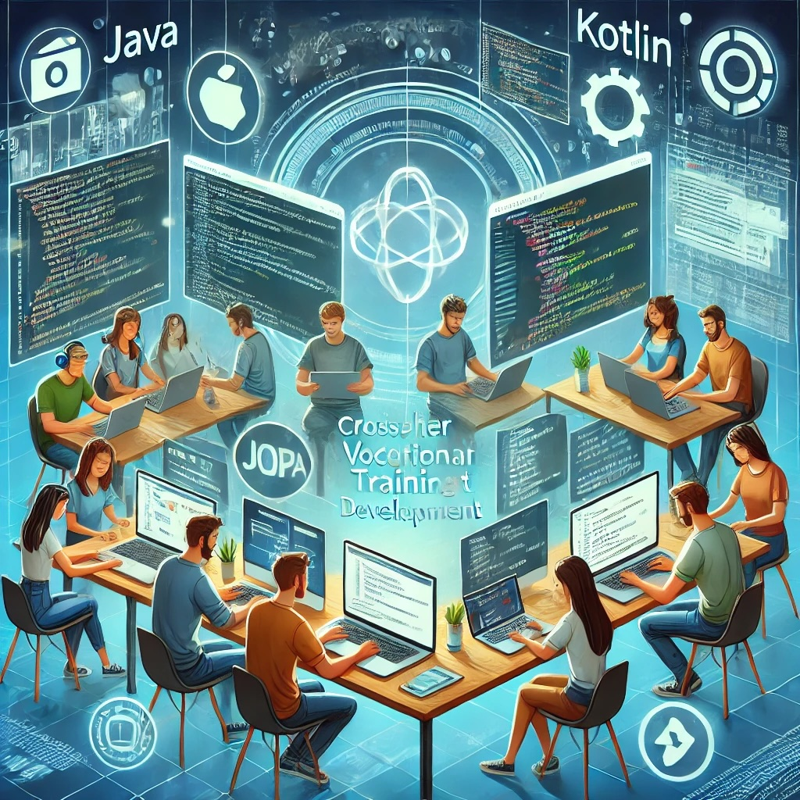

Diseño de un PLE en el entorno laboral a través de LinkedIn
GUíA DOCENTE
Título: Diseño de un PLE en el entorno laboral a través de LinkedIn

DALL·E 2025-02-21. Chat GPT. CFGS DAM(CC BY)
Ciclo: CFGS Desarrollo de Aplicaciones Multiplataforma
1º curso
Módulo: IPE I (Itinerario Personal para la Empleabilidad I)
Unidad de trabajo 12 : Aprendizaje autónomo
Temporalización: 3ª Evaluación
Metodología: ABP + Gamificación
Aprendizaje Basado en Proyectos (ABP) - Los alumnos crearán y optimizarán su perfil de LinkedIn como proyecto final. - Cada estudiante trabajará su marca personal y aplicará estrategias para la búsqueda de oportunidades laborales
Gamificación - "Desafío LinkedIn": Se otorgan insignias digitales o puntos por completar actividades, como:
Optimización del perfil (+10 puntos)
Publicar un post (+15 puntos)
Conseguir 5 validaciones de habilidades (+5 puntos)
Con las puntuaciones obtenidas se hará un Ranking de empleabilidad.
Resultados de Aprendizaje:
- RA 5. Aplica las estrategias para el aprendizaje autónomo reconociendo su valor profesionalizador, diseñando y optimizando su propio entorno de aprendizaje haciendo uso de las tecnologías digitales como herramientas de aprendizaje autónomo, siendo coherente con su identidad digital y sus propios objetivos profesionales planteados en su plan de desarrollo individual
Contenido: bloque 5 aprendizaje autónomo
5.a) Creación de un entorno personal de aprendizaje. Concepto. Identificación de necesidades de aprendizaje. Fuentes de información: páginas y sitios web. Herramientas digitales para crear y organizar información y contenidos de aprendizaje. Red personal de aprendizaje: redes sociales, profesionales y de comunicación.
Criterios de evaluación :
Se ha tomado conciencia de la responsabilidad individual en el desarrollo profesional valorando la actitud de aprendizaje permanente para el desarrollo de propias y nuevas competencias.
Se ha identificado la empleabilidad como capacidad de adaptación al entorno laboral.
Se han conocido y utilizado herramientas, fuentes de información, conexiones y actividades para la configuración de un entorno personal de aprendizaje para la empleabilidad.
Se ha puesto en práctica la competencia digital para configurar un entorno personal de aprendizaje para la empleabilidad.
Se ha analizado el concepto de identidad digital y su impacto en la empleabilidad.
Se ha justificado el diseño de su entorno de aprendizaje basado en cómo este mejora la empleabilidad.
Se ha elaborado su plan de desarrollo individual como herramienta para la mejora de la empleabilidad.
Se han aplicado las herramientas de aprendizaje autónomo para su desarrollo personal y profesional.
Se ha diseñado el entorno de aprendizaje que permite alcanzar el plan de desarrollo individual.